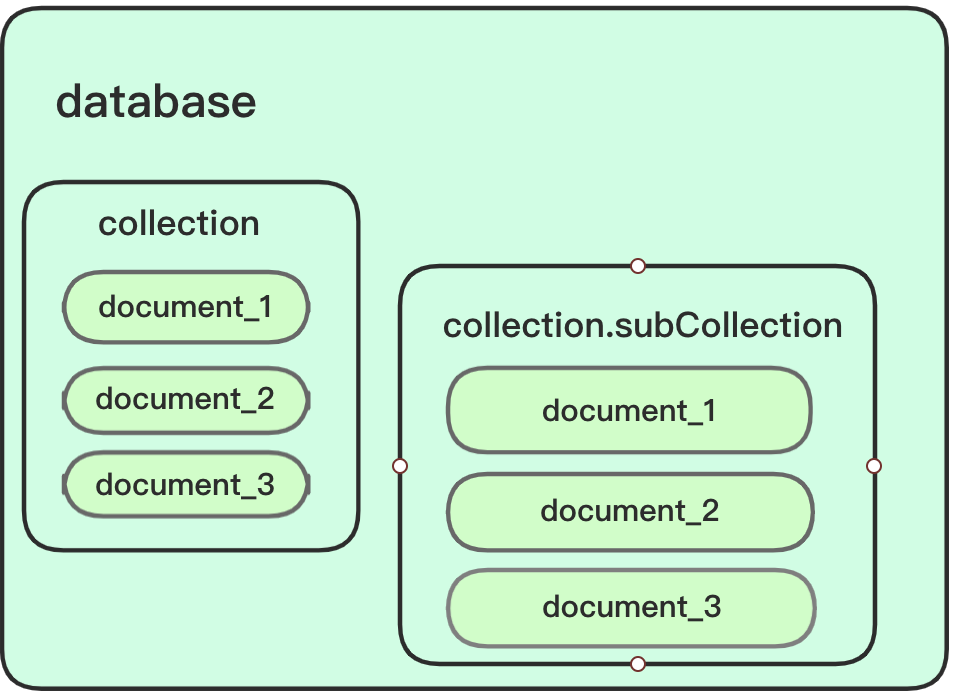
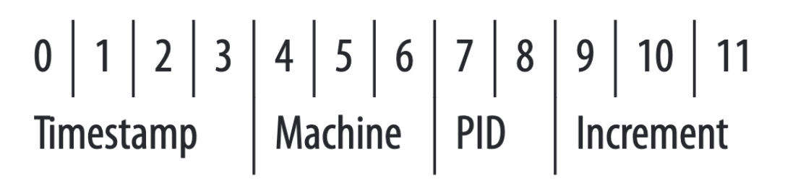
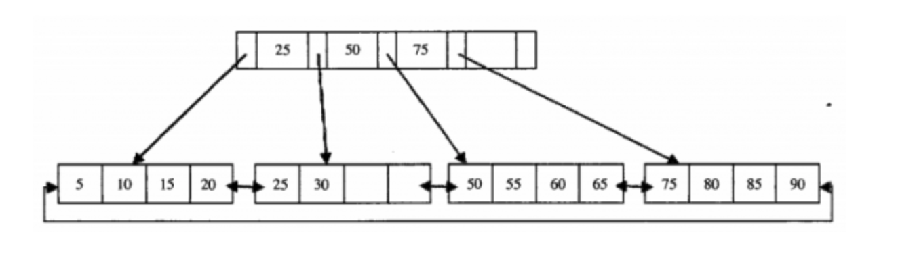
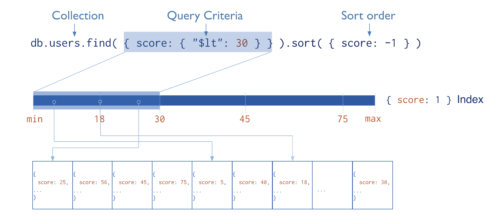

MongoDB是一个文档型数据库
文档数据库
与关系型数据库MySQL区别一, MongDB是文档型数据库，对用户而言，最小的储存单位是 文档(document) ,对应MySQL中的 记录(record) . 而文档的集合储存在 collection 里面，对应MySQL的 表(table) ，collection 的集合就是对应数据库 database 了，这个和MySQL一样，总之储存层次都是 三层。
但是，我们可以通过对collection的命名来创造逻辑上的子集合
sub collection, 以.符号来表示层次关系。假设CSDN的部分后台数据库是MongoDB，数据库名叫csdn，其中有一个命名为blog的collection，被表示为csdn.blog， 储存它博客系统的一些数据，那么还可能有csdn.blog.authors和csdn.blog.posts两个collection，来表示博客系统下面的作者和发布文章。blog.authors和blog.posts是blog的子collection， 但是只表示的是逻辑上的层次关系，是为了业务上的方便，它们本质上都是collection，数据库只识别一个.符号，表示 `database.collection 的层次关系。如果你们了解Redis的话，可以发现Redis的层次关系也是通过命名来体现的，但是Redis用的是
:符号。如
blog:authors

Document
MongoDB里面的一条记录，即一个document，其实就是一条 JSON 格式的数据。长下面这样：
1 | { |
假定你们对JSON有所了解，这部分不细讲
和 JSON 一样，document 也可以嵌套：
可以发现MongDB的数据组织形式更容易映射到现实世界的逻辑关系，简化数据库设计流程
1 | { |
但是区别就是document 比 JOSN 多了几种数据类型， 比如 date 、float 之类的。
BSON
BSON是一种二进制表示的序列化数据格式，在MongoDB中用这种格式来存储 documents ，可以理解为BSON就是 JSON + binary 。 而且BSON支持更多的数据类型，是 JSON 的拓展版。
ObjectId
值得一提的是MongoDB内建的类型 ObjectId ，这是专门为 _id 准备的类型，为了保证 _id 的全局唯一性。所以你应该猜出来了，_id 字段就是类似于 MySQL 的主键字段，同一张表内主键字段的值一定是唯一的。同样，在同一个 collection 中，需要保证 _id 的值唯一。
_id 作为标识某个 document 的字段，其值可以由用户在插入或更新时指定，用户指定的话可以为任意一种类型，但是需要保证值的唯一性，如果不唯一，插入或更新时会报错。如果用户插入数据时没有显式指定，就由MongoDB设置，默认的就是 ObjectId 类型。
ObjectId 可以理解为12字节的数字，分成一下四个部分：

前四个字节是时间戳，单位是秒，是从标准纪元开始算经过的秒数。时间戳在最前面可以按插入时间对插入的数据排序，虽然精度不高，只要秒级，但是对数据的索引很有用，也可以算出数据插入的时间。
标准纪元：UTC1970年1月1日0时0分0秒
4-6 这三个字节是机器的唯一标识符，一般是由
hostname哈希得出，在分布式系统中能保证不重复。7-9 PID 进程ID，进程唯一标识符，在几个进程并发生成 ObjectId 时提供进程的唯一标识。
9-11 就是类似MySQL的自增Id了，保证
document唯一性。
ObjectId 一般用十六进制的数表示，4个bit表示一位十六进制数，所以12字节需要24位十六进制数表示，所以ObjecId 长这样：
1 | "_id": ObjectId("6082977ca12ab38ba570841d") |
在分布式系统中，要保证数据的全局唯一性，需要一个东西来专门生成全局唯一的ID，这种就叫全局发号器。发号器的实现策略有很多，比如生成UUID、雪花算法啥的。MySQL是采用每台机器设置不同的自增起始值和自增的步长 (每次递增多少) 来发号。
要记住我们的 ObjectId 就是全局发号器的一种策略。
CRUD
因为比起MySQL，MongoDB更像是无结构的，所以对MongoDB的增删查改可以更加灵活。你还可以对某个document单独增加或减少字段，具体的CRUD操作本文不会介绍，详情看 官方手册
索引
我们先回顾一下MySQL的索引。
MySQL的InnoDB和MyISAM引擎使用的都是B+树索引

B+树和B树的主要区别是B树在非叶子节点也储存数据，而B+树在非叶子节点只储存索引数据，真实数据都放在叶子节点中。
MySQL的聚簇索引，所有数据都放在叶子节点中，非叶子节点只储存 Record的主键 ID 。 所以每次查询都要经过从根节点到叶子节点，如果树高是3的话，需要三次磁盘IO，时间复杂度是 O(log n)。
MyISAM也是使用B+树索引，但是它是索引和数据分离，索引和用户数据分别储存在两个文件中，那么B+树的叶子节点的数据，存储的就是真实数据的地址了。(先给你们看图)
那么MySQL为什么不用B树索引，两者区别在哪？
可以参考这篇文章
其实重点要突出的是，MongoDB用的是B树索引。
MongoDB的索引和MyISAM的策略差不多，索引和数据分离，索引内储存到真实数据的地址。

索引项是从小到大排序的，但是真实数据是按插入时间排序的。
和MySQL一样，MongoDB会自动为主键 _id 创建一个索引，这个索引不能被修改或删除，用户可以根据需要为其他字段也创建索引。
除了用B树索引，其他和MySQL没什么区别，所以MySQL索引的特性MongoDB也有，比如可以创建联合索引、遵循最左匹配原则等。
至于为什么MongoDB用B树索引，官方没有解释，可以在使用场景上考虑
B树和B+树的性能差异在于在于：
- 读取一定范围内的数据，B+树可以有更少的磁盘IO，比如这种语句
select * from xx where id > 23- B+树查询时间复杂度永远是O(log n)，而B树有可能一次命中，就是 O(1)。
而MongoDB作为文档型数据库，按范围查询的需求不多，采用B树效率更高。
当然可能还有其他更复杂的原因，详见讨论
应用场景
在某些场景下，MongoDB比MySQL更简单实用，20级习惯用MySQL的情况下，也要尝试一下使用MongoDB。
以匣子的空闲教室查询功能为例，最开始我是用MySQL存储数据，结构体如下：
1 | struct classroom { |
用户通过 楼栋号 和 星期数 来查询当天所有的空闲教室列表，如果用MySQL存储的话， 要么对两个结构体建两张表，但是又要新增连接两表的字段，而且要考虑数据冗余，消除传递依赖等，需要满足数据库设计的几大范式，流程复杂。或者直接按 FreeClassrooms 的结构建一张表，但是MySQL不支持储存数组， 我就是在业务层面将[]classrooms 序列化成 JSON 格式存储进去，读数据时再反序列化一次，业务上十分麻烦。
后来改用MongoDB了，以 FreeClssrooms 的结构直接储存
1 | { |
而且查询上没有按排序查询的需求，性能上和MySQL差别不大，用MongoDB更简单，
所以说MongoDB更符合数据库到现实世界的映射。
参考文档
- MongoDB Manual
- MongoDB:The Definitive Guide